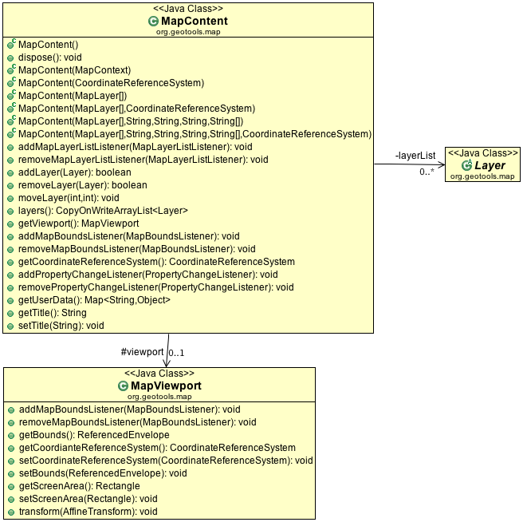
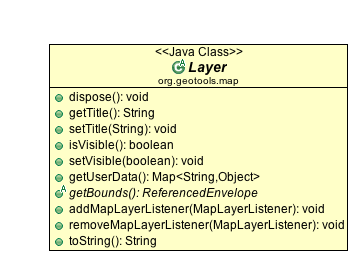
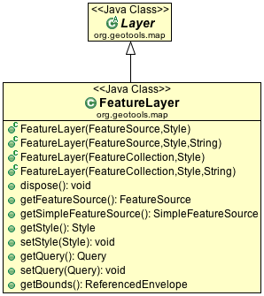
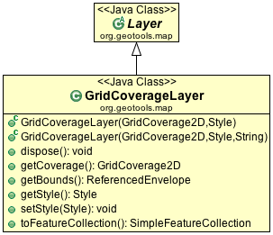
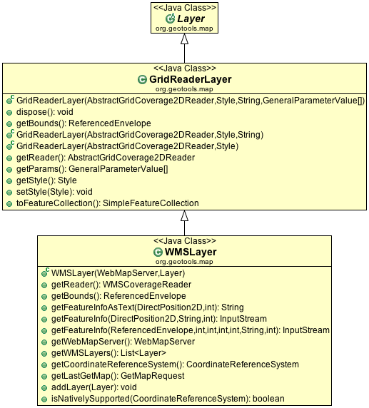
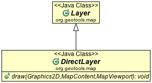
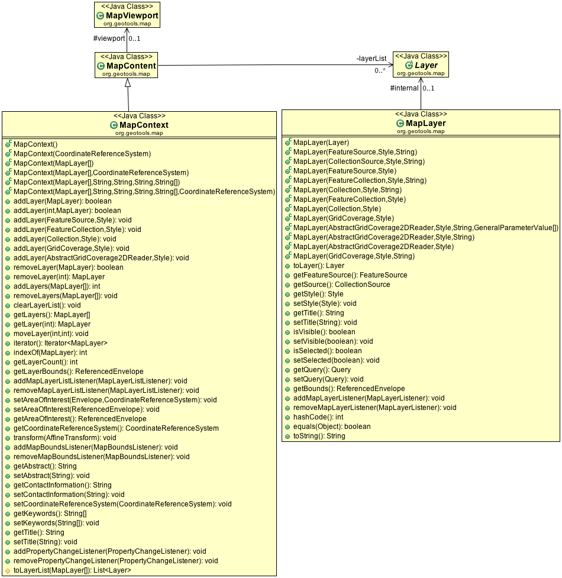

Map data and display classes¶
The gt-render module defines a new data structure to represent the contents of a map. MapContent defines a map as a series of layers (which are drawn in order). This is not part of the formal gt-opengis module because it is not based on a standard.
MapContent¶
MapContent is used to capture the contents of a map for rendering.
These ideas are broken down into the following three classes:
MapContent
The contents of a map to be drawn.
MapViewport
Represents the area of the map to drawn. The viewport stores:
- the world bounds (spatial extent in world units) of the area to be drawn;
- the screen, image or device bounds to draw into;
- the coordinate transforms used to convert between world and screen positions.
In practice, you provide the world and screen bounds to a MapViewport object and it calculates the coordinate transforms for you (see Aspect-ratio of map and screen bounds for more details).
Potentially, a viewport could also work with parameters other than horizontal spatial extent when defining the map data to be drawn such as height or time. The MapViewport class does not presently support such usage but you could derive a sub-class for this purpose.
Layer - represents a layer of content to be drawn; layers are held in a list and are drawn in order.
Examples:
Direct access to layer information is provided:
MapContent content = mapFrame.getMapContent(); if( content.layers().get(0) instanceof FeatureLayer ){ FeatureLayer selectionLayer = (FeatureLayer) content.layers().get(0); selectLayer.setStyle( style ); }Zoom out to show all content:
MapContent content = mapFrame.getMapContent(); MapViewport viewport = content.getMapViewport(); ReferencedEnvelope maxBounds = null; CoordinateReferenceSystem mapCRS = viewport.getCoordianteReferenceSystem(); for (Layer layer : content.layers()) { ReferencedEnvelope dataBounds = layer.getBounds(); CoordinateReferenceSystem dataCrs = dataBounds.getCoordinateReferenceSystem(); if (!CRS.equalsIgnoreMetadata(dataCrs, mapCRS)) { dataBounds = dataBounds.transform(mapCRS, true); } if (maxBounds == null) { maxBounds = dataBounds; } else { maxBounds.expandToInclude(dataBounds); } } viewport.setBounds( maxBounds );
Aspect-ratio of map and screen bounds¶
Very often, the aspect ratio (ratio of width to height) of the world and screen bounds will differ. By default, MapViewport does not make any correction for this (this behaviour accords with the OGC WMS specification which states that a map server should honour the bounds provided by the user regardless of any distortion which results).
In many cases, it is preferable to have MapViewport automagically correct for differing aspect ratios, thereby avoiding distortion in the map display. You can request this behaviour as follows:
MapViewport vp = myMapContent.getViewport();
vp.setMatchingAspectRatio( true );
With this setting, the viewport will calculate coordinate transforms such that the user requested world bounds are centered in the screen or image display area. Note that when such a correction has been applied, the world bounds stored by the viewport will be larger than those requested by the user.
Layer¶
We have different subclasses of of Layer each specifically made for working with different kinds of content.
The important information each Layer implementation must provided is:
Layer.getTitle()
Layer.setTitle( String )
Used in a legend to display to the user
Layer.isVisible()
Layer.setVisible( boolean )
Layer.getuserData()
A general purpose map used by applications to hold information. This approach was preferred as an alternative to loading up Layer with additional methods to handle selection, error feedback and so forth.
Layer.getBounds() - the extent of the data being rendered by the Layer
Layer.addMapLayerListener()
Layer.removeMapLayerListener()
Used to notify the renderer of any changes when used in an interactive setting.
With these ideas in mind we can now explore the different kinds of content that can be added to a map:
FeatureLayer¶
Feature layer is set up to render information from a FeatureSource.
You can use the various method of the DataUtilities class to convert your information into a FeatureSource if it happens to be in another format. This is what the constructor that takes a FeatureCollection does internally.
GridCoverageLayer¶
Used to render a GridCoverage.
Note that direct use of a GridCoverage in this fashion is generally not as efficent as using GridReaderLayer below.
GridReaderLayer¶
Used to render raster information on the fly directly from a GridCoverageReader.
This is an efficient solution (much like FeatureSource) in that for many cases the correct visual can be determined without reading all of the raster into memory:
- When zoomed in the amount of the file read can be limited when working with common formats such as geotiff. Other formats such as JPEG require that the entire image be loaded each time.
- When zoomed out information from a raster overlay can be used (if avaialble) to avoid reading the entire file.
The performance of GridReaderLayer is dependent on how you have tuned your Java Advanced Imaging “TileCache” and on the amount of work you have put into prepairing your data for display.
This class has been extended by gt-wms for the rendering of WMS information.
DirectLayer¶
Experimental: DirectLayer is used fill in your own custom renderer (primarily intended for drawing scalebars, north arrows and grids to decorate the map).
This concept is considered experimental and is not currently hooked up.
MapContext¶
An earlier draft of these ideas is based on initial OGC discussion papers:
- Web Map Context (WMS Context)
- Open Web Service Context (OWS Context)
The GeoTools community actively looking to collaborate with other projects (such as OpenJUMP, uDig and deegree) in order to collaborate on these ideas. If open source collaboration fails we will look to traditional collaboration with a standards body in the form of the OGC working group on “Open Web Context” documents.
References:
- http://www.opengeospatial.org/standards/wmc
- http://www.opengeospatial.org/projects/groups/owscontextswg
These initial concepts are preserved with the following extensions to MapContent.
The critical design difference here is a single MapLayer which is general purpose for working with any kind of content (and also confusing to work with as their is no easy way to check what kind of content is in use).
Note
Internally this code has been refactored to use MapContent / Layer and MapViewport. As such we do not recommend using MapContext and MapLayer for new development.
At a technical level we no longer keep instances of of MapLayer around; instead each is a shallow wrapper around a layer holding the specific content (FeatureLayer, GridReaderLayer, etc...).
In the event clinet code is expecting a MapLayer; this wrapper is recreated as needed and returned from getLayer( int ) method.
In a similar fashion the various methods for managing the area of interest delegate to MapViewport.